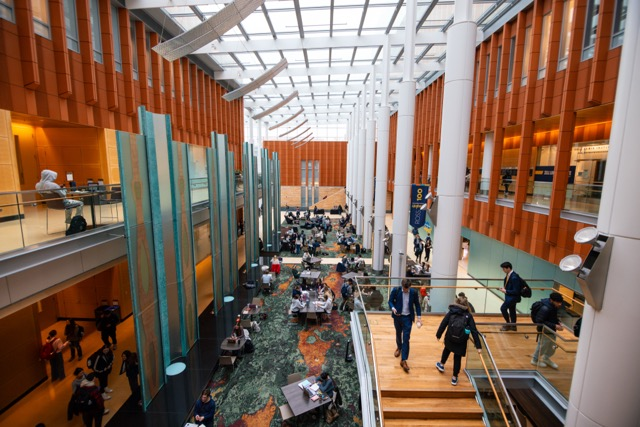

Finding the perfect study environment can make all the difference in your academic experience. The University of Michigan offers an array of diverse study spaces that cater to different learning styles and preferences. Below, we highlight some of the most popular study locations on campus
Central Campus Study Spaces
Shapiro Library
The Shapiro Libary is one of the most popular study spots on campus. There are multiple floors with varying sound levels that perfectly fit one's study needs. There is a cafe on the main level along with a collaboration zone for group work. Many study spaces include beautiful views of diag and other parts of campus.

Law Library
One of the most famous study spots on campus is the Law Library. Many find this study space to be perfect because of the the gorgeous architecture and the completely silent environment.
Ross School of Business
Another popular space is Ross School of Business. Here you will find a busy environment with many student being hard at work. This space also includes a Starbucks.
Hatcher Library
Lastly, a classic study spot on campus, located right next to Shapiro Library, is the hatcher library. Hatcher is great for those who need a quiet work environment.
Private Study Room Booking
If you are in need of a guaranteed private study space, visit the Study Spaces website for booking.